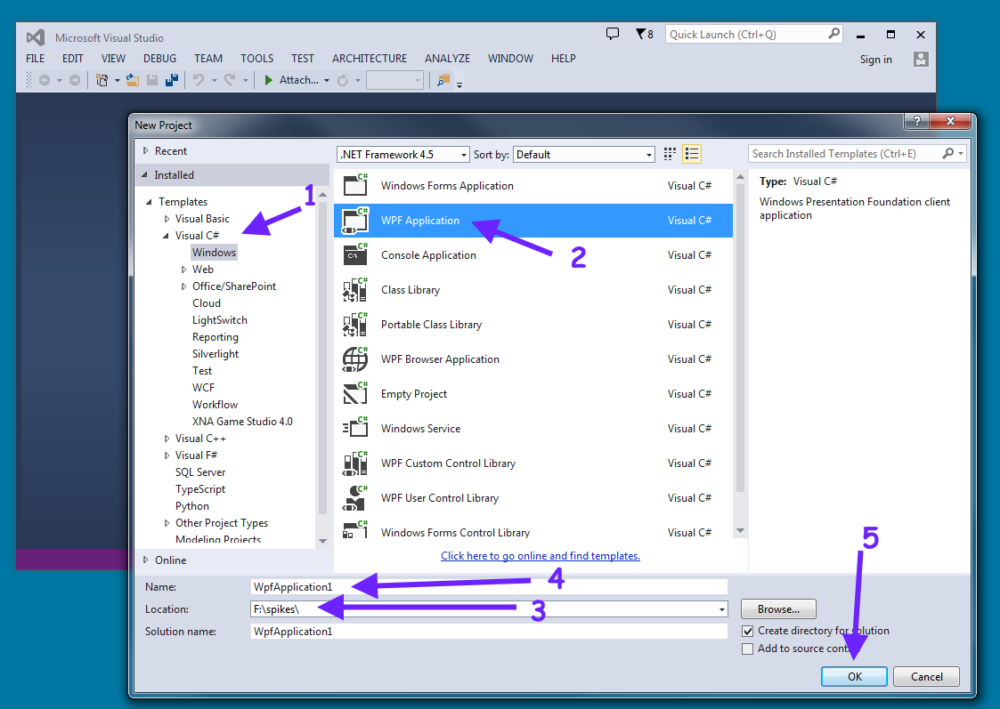
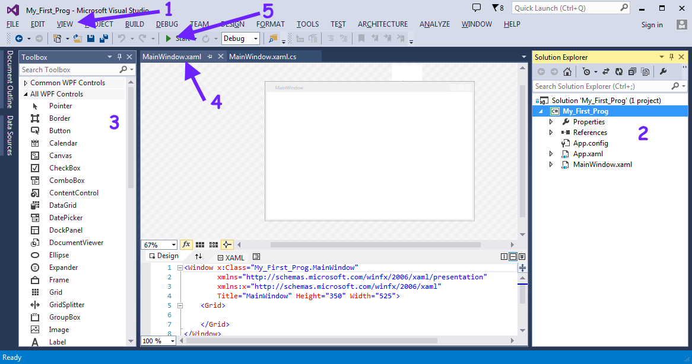
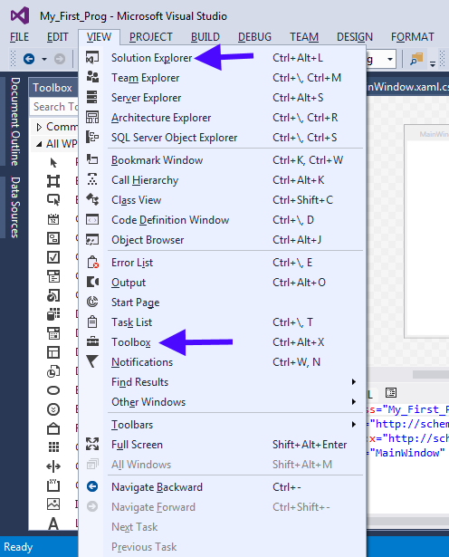
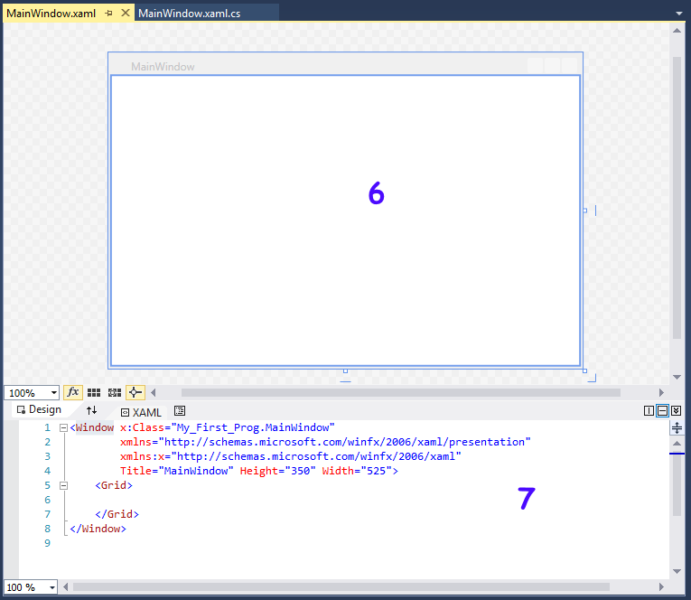
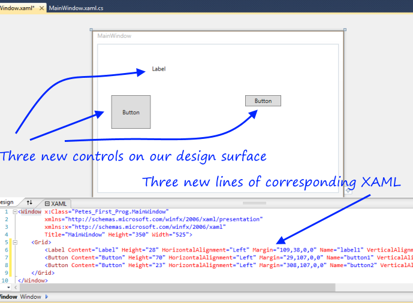
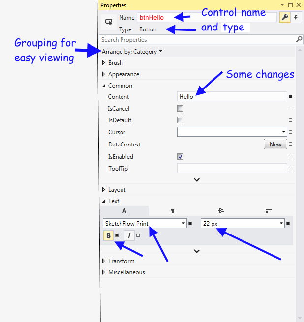
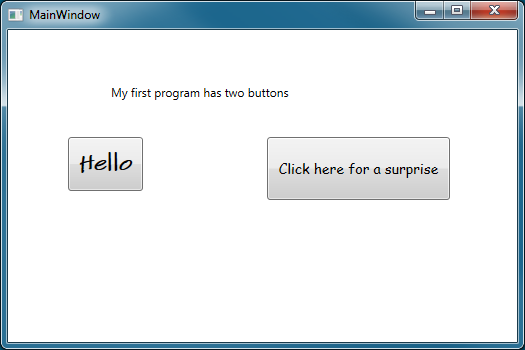
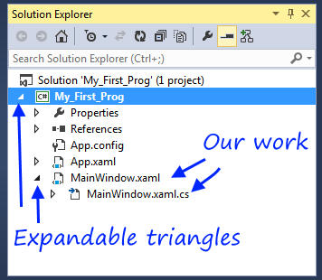

2. The Visual Studio Survival Guide¶
We’ll jump straight in.
We’ll assume we have Visual Studio 2013 (VS) installed and working. There are a few different versions of VS: the one we used is called Visual Studio 2013 Ultimate. But if we don’t want to buy one, we should use the free VS Community 2013 Edition from https://www.dreamspark.com/Product/Product.aspx?productid=89.
If we use a different version of VS a few things may look slightly different, but we’ll still be able to do all the samples in this textbook. The high-end commercial versions have extra features, options, and languages that we don’t need here.
2.1. Our first “Hello, World!” program:¶
We start Visual Studio, select the menu items File | New | Project (we use this notation to mean “click on the File menu (top left corner), then open the New menu, then click on the Project item”).
The New Project window will open, and our screen should look similar to this:
Now we need 5 steps to create our new project:
- Make sure we are creating a C# program for Windows.
- We choose to create a WPF (Windows Presentation Foundation) flavour of program.
- We select a folder or directory where we want our program to be created and saved.
- We choose a nice name for our program. Always start the name with a letter! Don’t leave spaces in the name, or use any special characters other than the digits 0,1,2,3,4,5,6,7,8,9, or an underscore (_). So we’ll call our first program something like My_First_Prog. We type this into the Name field.
- We’re ready for some magic. We click the OK button, and Visual Studio will get to work and will give us a skeleton of our first program.
We should now see this:
Perhaps the most important menu for our initial survival is the View menu:
If we don’t have our Solution Explorer window showing, (the window labelled 2) we can make it show up from the View menu. The Solution Explorer is the “gateway” that allows us to get to our work.
If we don’t have our Toolbox showing, (labelled 3), the View menu has an option again. (It looks like a toolbox, to remind us that these are our tools!)
Practice opening and closing the Solution Explorer and the Toolbox. If we are feeling adventurous, we can also drag any window to another part of the screen or even onto a second screen, or get it completely detached from Visual Studio.
There are also some interesting little “pins” next to the close button of each window: they “pin” the window so that it remains open. If we unpin a window we’ll get an even more powerful way to organize everything on our desktop! Try it!
There are two other important labels on the image above: label 4 shows what we call a “tab control” — a way to have multiple windows stacked behind each other. We have two windows open in our tab control, the one called “MainWindow.xaml” is at the front, and “MainWindow.xaml.cs” is behind it. We can click on the tabs in the tab control to bring its window to the front.
And finally, label 5 shows where to find the “Start” button. It starts running the program we’re about to write.
Let’s take a closer look at MainWindow.xaml:
This is all one window with two sub-windows. It provides a “design surface”, like a blank sheet of paper, that allows us to design what we want our program’s GUI to look like.
It has two “views” of the same information: the Design view, labelled 6, lets us see our design. The window labelled 7 is an ugly, not-really-intended-for-humans description of our design, called the XAML (say it as “zammel”, like “camel”).
2.2. Designing our GUI¶
The Toolbox provides a collection of controls (see the definition in the glossary at the end of this chapter) that can be added to our main window. If we drag and drop any control, say the Button, from the Toolbox to our main window, it will create a new button in our main window. Then we can grab the newly created button, and move it (or resize it). Similarly, we can create a new label as part of our design by dragging a Label control from the tollbox. Here is what we’ll have after putting one label and two buttons on our window, and moving them around and resizing them a bit:
We notice that as Design view changes when we add new things,
the XAML also changes.
They are two views, or ways of looking at the same thing.
We can experiment by dragging or resizing the big button to a new location,
and seeing how the XAML changes in response.
Or, we can go into the XAML and change the string that gets displayed in the
control. For example, if we change the XAML
corresponding to the big button (the one with Height="70") to Content="Hello",
we’ll see the new text displayed on the face of the button in the Design view too.
So one way of changing controls is by dragging and moving them in the designer. A second way is by hand-editing the ugly XAML. But there is a third way too, one that we prefer to use. The View menu allows us to open a Properties window to change properties. (Pressing the key F4 is a short-cut method of opening the Properties window.) Whichever control is currently selected (click on it, or click on its XAML) will have its own properties displayed in the Properties window.
Some users prefer to work with the Properties window “detached from the others” so that as the properties are changed they can also see the Design view (and the XAML) changing at the same time. The Property window gives us an easier way to change the properties of any control. So after a few changes, it could look something like this:
There are more than 60 properties that can be set on a button. Here they are arranged by category, so everything to do with text properties is in one place, and everything to do with brushes for the colours is grouped together.
Here we’ve changed five properties of our button: the Control’s name, at the top, in red. (We’re going to use this name later when we write some code-behind.) The Content is what gets displayed on the button. And we’ve changed the Font, the Font Size, and we’ve clicked the Bold button to make the font bold. Each change here also shows up as a change in the XAML, and we can also see the changes in the Design view.
Once we’ve changed what we want to for this button, we can close its property window, go back to our Main Window. Now we can repeat what we did for the second button: open its property window, change some of its properties, and close the property window. Finally, we can also change some properties on the label. We’ll now have our Design window looking like this:
2.3. Adding some code to our program¶
When our program is running, we expect that the user will click one of the buttons. This causes an event from the button. We now need to write our first bit of C# handler code that will respond to the event.
In the Design view, double-click on the “Hello” button. Visual Studio now writes some skeleton handler code for us. It also changes the XAML for the button so that the button click event becomes “tied to” the new handler code.
We’ll add a line to the skeleton handler that VS has written for us. So when we’ve typed that line in, we’ll have this fragment of code, and some other code that we’ll ignore for the moment, in the file too.
Lines 1,2 and 4 are the skeleton of the handler (provided for free by Visual Studio). But line 3 we’ll have to type by hand. Be careful with all the syntax and the capitalization — it must be precisely as shown.
2.4. Now we can run our first program!¶
In Visual Studio, click the run button. Notice a few things.
- Our new program starts running and opens our newly designed GUI with a title bar that says MainWindow.
- Our program’s GUI window opens up in front of Visual Studio.
- If we click our button labelled Hello, a message box will pop up with our message.
- We can close the message box and try clicking the button again. (What do we think will happen?)
- While our program is running, the Visual Studio title bar (at the top of the main VS window) displays the state as “(Running)”.
- And Visual Studio also gives us an extra button to Stop our program.
We can stop our program by closing its MainWindow. (So the program stops itself.) Or we can use the Visual Studio stop button to force it to stop. Forcing a program to stop (by using Visual Studio) is useful when we write an incorrect program that cannot correctly stop itself.
2.5. Your turn¶
Stop the program, go back and add a second handler for the other button, do something similar, and make it work so that the user can click either button and get a different response from our program.
2.6. Hey, my work has gone missing!¶
Close the two windows (MainWindow.xaml) and (MainWindow.xaml.cs). Now we’re stuck. How can we get them back?
That’s where the Solution Explorer window is so useful. Make sure it is open (Section 2.1 tells you what to do if it is not open). Notice the little expandable triangle icons occur all over the place: they always mean that there is some sub-detail that can be shown (or hidden) if we click on them. So let us get our Solution Explorer looking like this:
From there, we can double-click on our working files to open them again.
2.7. Mental workout: Connecting the dots¶
It is important to understand that the toolbox offers you a number of different types of controls for building your GUI — Button, Label, etc. When we drag a button onto our design window, we’re making a new instance of that type of thing. So we had two button instances and one label instance in our first program.
One button instance can display some text, another might be a different size, at a different position, and might show something different on the button face. And we’ve already seen that each button can have its own “handler” code, and can do something different when clicked.
We’ll see this idea often. We have a type of building block, but we can make as many different instances as we need to. This is an idea we see all around us everyday. For example, the Samsung S5 Mini is a type of phone. There are many instances, each with their own address book, their own ring tones, and so on.
A good hint for becoming a good Computer Scientist (any kind of scientist, really) is to always look for opportunities to join the dots. Can you relate some seemingly new idea to other ideas that you already know and understand. How is this new situation similar, how is it different?
2.8. Key survival skills and concepts that we’ll need¶
- How to start up Visual Studio, choose the right language and flavour of program, and build a simple program.
- Understand design time versus run time. How to know which state Visual Studio is in. (We’ll watch the VS title bar if we are unsure).
- How to run our program.
- How to stop a running program, even if it doesn’t want to stop itself!
- How to find and open the different VS sub-windows after they have been closed or hidden. (Solution Explorer, Toolbox, our MainWindow, the code associated with the main window)
- We’ll need some familiarity with the Toolbox of available control types, like Button, and Label.
- How to create different instances of any controls on our MainWindow GUI.
- The idea that each instance has its own properties.
- How to use the Properties window to edit the properties of any instance.
- How to name each instance uniquely.
- The idea that we’ve seen three different ways to change properties: we can move or resize things in the designer view; or we can use the Properties window to make changes; or we can change the XAML. It doesn’t matter which method we use: so pick the one that works best for you.
2.9. Glossary¶
- container control
- A control that can have children controls. It allows us to group, organize, and lay out the children controls. The Grid is a container control. Visual Studio starts off a new WPF application by giving us a blank Grid to begin with. (See line 5 of the XAML code in the screen shot above: there is a Grid instance that contains everything else.)
- control
- Any of the visual components or building blocks that we can use to design our window. Some examples are buttons, sliders, menus, panels, labels, images and text boxes.
- design time
- The time when we are designing our GUI window, or writing code-behind for our application. See run time.
- properties window
- One of the Visual Studio windows that lets us edit (change) properties of our control instances.
- property
- Each instance of a control (say a button instance) has properties such as the content that it displays; its size; its position; its background colour; the font it uses for text; the font size, etc.
- run time
- The time when our program is running. See design time.
- toolbox
- One of the Visual Studio sub-windows that shows the control types that we can use when designing our own WPF flavour of GUI applications.
- Visual Studio
- A software product from Microsoft that helps us design applications that start with a main GUI window which can contain other visual components like buttons, sliders and images.
- WPF
- Windows Presentation Foundation (WPF) is a set of tools (many of them found in the toolbox) that allows us to build applications with a GUI window for interaction with our users.
- WPF application
- A WPF application (which is the kind we’re building here) is an application built using the WPF tools. It will always open a main GUI window when it starts running.
2.10. Exercises¶
- Connect the dots ... Find your favourite music or video player application, and check out what icons (little shapes or symbols) it uses for Play, Pause and Stop. Then check out the Visual Studio buttons for Running, Pausing and Stopping a program, and see if they are the same.